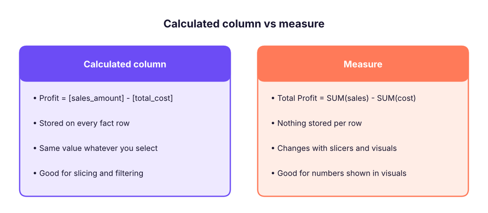
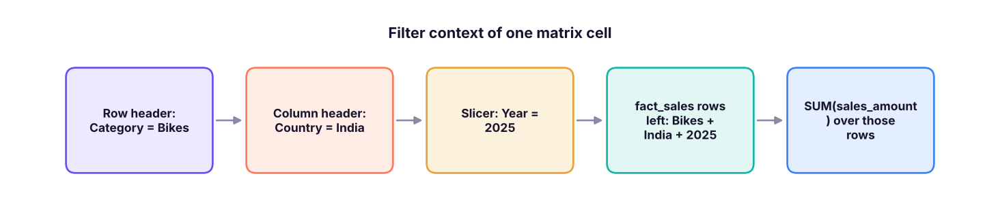
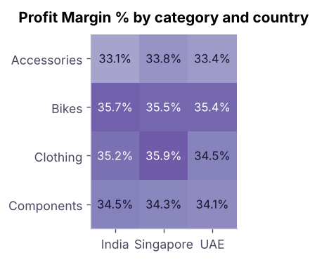

DAX Fundamentals: Measures, Filter Context & CALCULATE
Learn DAX, the formula language of Power BI. Understand calculated columns vs measures, row context vs filter context, write core aggregations and iterators (SUMX), master CALCULATE and FILTER, ALL/REMOVEFILTERS and ALLSELECTED, handle division safely, use variables, and build a library of business measures.
- Explain the difference between a calculated column and a measure, and when to use each
- Describe row context and filter context and predict what a measure returns in a visual
- Write aggregation measures and iterators (SUM, COUNTROWS, DISTINCTCOUNT, SUMX, AVERAGEX)
- Use CALCULATE with filter arguments, ALL/REMOVEFILTERS and ALLSELECTED to build ratios and percent-of-total
- Use variables, DIVIDE, IF/SWITCH and display folders to write clean, reusable measures
What is DAX?
DAX (Data Analysis Expressions) is the formula language used in Power BI, Excel's Data Model and Analysis Services. It looks like Excel formulas, but it works on columns and tables and recalculates for whatever the user selects in a visual. DAX is the skill that separates a report builder from a Power BI developer.
| Calculated column | Measure | |
|---|---|---|
| Evaluated | Row by row when data is refreshed | On the fly, for the current filter selection |
| Stored in the model | Yes (uses memory) | No (only the formula) |
| Result depends on slicers? | No | Yes |
| Use for | New attributes to slice by (Age Band, Hire Year, Profit per row) | Totals, ratios, KPIs, growth |
| Appears in | Rows, columns, slicers, filters | Values area, cards, tooltips |

If you want to put it on an axis or slicer, make a column. If you want to put it in the Values well, make a measure. In a star schema, almost every number is a measure.
DAX syntax in five minutes
Total Sales = SUM ( fact_sales[sales_amount] )Total Salesis the measure name (spaces allowed, no brackets when defining it).=starts the formula.SUMis a function;fact_sales[sales_amount]is a fully qualified column (table name, then column in square brackets). Always include the table name for columns; never include it for measures:[Total Sales].- Strings use double quotes; comments use
--or//or/* … */. - Operators:
+ - * /,&(join text),= <> > < >= <=,&&(AND),||(OR),IN { "A", "B" }. - Spaces and line breaks are ignored; format with daxformatter.com or the formatting button.
Creating measures
Home → New measure (or right-click a table). Put all measures in an empty table named _Measures (Home → Enter data → name _Measures → Load, then hide its default column) so they are easy to find. Use display folders (Model view → Properties) to group them.
Basic aggregations
Total Sales = SUM ( fact_sales[sales_amount] )
Total Cost = SUM ( fact_sales[total_cost] )
Total Profit = [Total Sales] - [Total Cost]
Profit Margin % = DIVIDE ( [Total Profit], [Total Sales] )
Units Sold = SUM ( fact_sales[quantity] )
Orders = DISTINCTCOUNT ( fact_sales[order_number] )
Order Lines = COUNTROWS ( fact_sales )
Avg Order Value = DIVIDE ( [Total Sales], [Orders] ) -- in this data every order has one line, so Orders = Order Lines
Customers = DISTINCTCOUNT ( fact_sales[customer_key] )Check the values in Python; they are what a card visual with no filters would display:
import pandas as pd
D = "adventure_cycles/"
f = pd.read_csv(D + "fact_sales.csv", parse_dates=["order_date"]); p = pd.read_csv(D + "dim_product.csv"); t = pd.read_csv(D + "dim_territory.csv")
sales, cost = f.sales_amount.sum(), f.total_cost.sum()
print(f"Total Sales : {sales:,.0f}")
print(f"Total Cost : {cost:,.0f}")
print(f"Total Profit : {sales - cost:,.0f}")
print(f"Profit Margin % : {(sales - cost) / sales:.1%}")
print(f"Units Sold : {f.quantity.sum():,}")
print(f"Orders : {f.order_number.nunique():,}")
print(f"Order Lines : {len(f):,}")
print(f"Avg Order Value : {sales / f.order_number.nunique():,.0f}")
print(f"Customers : {f.customer_key.nunique():,}")Total Sales : 594,559,665 Total Cost : 384,392,790 Total Profit : 210,166,875 Profit Margin % : 35.3% Units Sold : 22,703 Orders : 9,000 Order Lines : 9,000 Avg Order Value : 66,062 Customers : 1,200
[A] / [B] returns an error or infinity when B is 0 or blank. DIVIDE ( [A], [B] ) returns BLANK (or an alternate result: DIVIDE ( [A], [B], 0 )). Always use DIVIDE for ratios.
Filter context: the heart of DAX
When you put a measure in a visual, DAX evaluates it once per cell, with a filter context made of everything that filters the data for that cell: row and column headers, slicers, page/report filters, and cross-filtering from other visuals.

Same measure, different context in each cell. The matrix below is exactly what Power BI shows for Total Sales with Category on rows and Country on columns:
m = f.merge(p, on="product_key").merge(t, on="territory_key")
m["year"] = m.order_date.dt.year
print((m.pivot_table(index="category", columns="country", values="sales_amount", aggfunc="sum") / 1e6).round(1).to_string())
print("\nSame measure, with a Year = 2025 slicer:")
print((m[m.year == 2025].pivot_table(index="category", columns="country", values="sales_amount", aggfunc="sum") / 1e6).round(1).to_string())country India Singapore UAE category Accessories 6.7 1.7 1.3 Bikes 320.6 74.8 71.3 Clothing 6.0 1.3 1.1 Components 73.5 18.8 17.2 Same measure, with a Year = 2025 slicer: country India Singapore UAE category Accessories 2.2 0.7 0.4 Bikes 102.3 24.6 22.0 Clothing 2.0 0.3 0.4 Components 22.9 7.1 5.1
Row context
A row context exists when DAX goes through a table row by row: in a calculated column, and inside iterator functions (SUMX, AVERAGEX, FILTER…). In row context, column references mean "this row's value".
-- Calculated column on fact_sales: row context gives each row's own values
Line Profit = fact_sales[sales_amount] - fact_sales[total_cost]Row context does not automatically filter other tables; CALCULATE converts a row context into a filter context ("context transition").
Iterators: SUMX, AVERAGEX, MAXX
SUM ( column ) adds one column. When you need to calculate per row first and then aggregate, use an iterator: SUMX ( table, expression ).
-- Revenue at list price (unit_price x quantity), calculated row by row
List Value = SUMX ( fact_sales, fact_sales[quantity] * fact_sales[unit_price] )
-- Average margin per order line (not the same as total profit / total sales!)
Avg Line Margin % = AVERAGEX ( fact_sales, DIVIDE ( fact_sales[sales_amount] - fact_sales[total_cost], fact_sales[sales_amount] ) )
-- Most profitable single line
Max Line Profit = MAXX ( fact_sales, fact_sales[sales_amount] - fact_sales[total_cost] )f["line_profit"] = f.sales_amount - f.total_cost
list_value = (f.quantity * f.unit_price).sum()
avg_line_margin = ((f.sales_amount - f.total_cost) / f.sales_amount).mean()
print(f"List Value : {list_value:,.0f}")
print(f"Realised/List : {f.sales_amount.sum() / list_value:.1%} (average price realisation)")
print(f"Avg Line Margin % : {avg_line_margin:.1%} vs overall margin {(f.sales_amount.sum() - f.total_cost.sum()) / f.sales_amount.sum():.1%}")
print(f"Max Line Profit : {f.line_profit.max():,.0f}")List Value : 617,201,300 Realised/List : 96.3% (average price realisation) Avg Line Margin % : 34.5% vs overall margin 35.3% Max Line Profit : 174,060
The average of line margins (34.5%) differs slightly from the overall margin (35.3%) because large lines count more in the total than in a simple average. Choose the definition the business wants, and name the measure clearly.
CALCULATE: change the filter context
CALCULATE ( expression, filter1, filter2, … ) evaluates the expression in a modified filter context. It is the most important DAX function.
Bike Sales = CALCULATE ( [Total Sales], dim_product[category] = "Bikes" )
India Sales = CALCULATE ( [Total Sales], dim_territory[country] = "India" )
Bike Sales India 2025 =
CALCULATE ( [Total Sales], dim_product[category] = "Bikes", dim_territory[country] = "India", dim_date[year] = 2025 )
High Value Lines = CALCULATE ( COUNTROWS ( fact_sales ), fact_sales[sales_amount] > 200000 )Multiple filter arguments are combined with AND. A simple column filter like dim_product[category] = "Bikes" replaces any existing filter on that column.
bike = f.merge(p, on="product_key").query("category == 'Bikes'").sales_amount.sum()
print(f"Bike Sales : {bike:,.0f}")
india_2025_bikes = m[(m.category == "Bikes") & (m.country == "India") & (m.year == 2025)].sales_amount.sum()
print(f"Bike Sales India 2025: {india_2025_bikes:,.0f}")
print(f"High Value Lines : {(f.sales_amount > 200000).sum():,}")Bike Sales : 466,754,465 Bike Sales India 2025: 102,271,520 High Value Lines : 797
Filter functions: ALL, REMOVEFILTERS, ALLSELECTED, ALLEXCEPT, KEEPFILTERS
| Function | Effect | Typical use |
|---|---|---|
ALL ( table or column ) / REMOVEFILTERS ( … ) |
Ignores filters on the table/column | Grand totals, denominators |
ALLSELECTED ( … ) |
Ignores filters from the visual's own rows/columns but keeps slicers and page filters | "% of visible total" |
ALLEXCEPT ( table, col1, … ) |
Removes all filters on the table except those columns | Subtotals per group |
VALUES ( column ) |
The distinct values visible in the current context | Counting / looping over what is filtered |
SELECTEDVALUE ( column, alt ) |
The single selected value (or alternate) | Titles, dynamic measures |
KEEPFILTERS ( filter ) |
Intersects with, rather than replaces, existing filters | Advanced |
Percent of total
Sales % of Total =
DIVIDE ( [Total Sales], CALCULATE ( [Total Sales], REMOVEFILTERS ( dim_product ) ) )
Sales % of Visible Total =
DIVIDE ( [Total Sales], CALCULATE ( [Total Sales], ALLSELECTED ( dim_product ) ) )
Share Within Country =
DIVIDE ( [Total Sales], CALCULATE ( [Total Sales], ALLEXCEPT ( dim_territory, dim_territory[country] ) ) )cat = m.groupby("category").sales_amount.sum()
print((100 * cat / cat.sum()).round(1).rename("Sales % of Total").to_string())category Accessories 1.6 Bikes 78.5 Clothing 1.4 Components 18.4
FILTER: row-by-row conditions
FILTER ( table, condition ) is an iterator that returns the rows where the condition is TRUE. Use it when a filter needs a measure or several columns; for a simple single-column comparison, the plain column = value form inside CALCULATE is faster.
-- Sales from products with a list price above 1,00,000
Premium Sales = CALCULATE ( [Total Sales], FILTER ( dim_product, dim_product[list_price] > 100000 ) )
-- Number of products whose total sales beat 1 crore
Strong Products = COUNTROWS ( FILTER ( VALUES ( dim_product[product] ), [Total Sales] > 10000000 ) )prem = f.merge(p, on="product_key").query("list_price > 100000").sales_amount.sum()
ps = f.groupby("product_key").sales_amount.sum()
print(f"Premium Sales : {prem:,.0f}")
print(f"Strong Products: {(ps > 10_000_000).sum()} (products with sales above ₹1 crore)")Premium Sales : 303,639,995 Strong Products: 20 (products with sales above ₹1 crore)
Variables and readability
VAR … RETURN stores intermediate results: easier to read, easier to debug, and faster (each variable is evaluated once).
Profit Margin vs Overall =
VAR CurrentMargin = DIVIDE ( [Total Profit], [Total Sales] )
VAR OverallMargin = CALCULATE ( DIVIDE ( [Total Profit], [Total Sales] ), REMOVEFILTERS () )
RETURN
CurrentMargin - OverallMarginLogical and text measures
Margin Status =
SWITCH (
TRUE (),
ISBLANK ( [Profit Margin %] ), "No data",
[Profit Margin %] >= 0.4, "Excellent",
[Profit Margin %] >= 0.3, "Good",
"Review"
)
Selected Country Title =
"Sales for " & SELECTEDVALUE ( dim_territory[country], "all countries" )| Function | Purpose |
|---|---|
IF ( test, a, b ), SWITCH ( expr, v1, r1, … ), SWITCH ( TRUE (), cond1, r1, … ) |
Branching |
ISBLANK, COALESCE ( x, 0 ), BLANK () |
Handle empty values |
HASONE ( col ), ISFILTERED ( col ) |
Test the current context |
FORMAT ( value, "0.0%" ), CONCATENATEX ( table, col, ", " ) |
Text |
Measures in action: a profit-margin matrix

Common DAX mistakes
| Mistake | Fix |
|---|---|
| Using a calculated column where a measure is needed (results do not respond to slicers) | Create a measure |
Dividing with / |
DIVIDE |
Writing SUM ( [Measure] ) |
SUM takes columns; use SUMX ( table, [Measure] ) for measures over rows |
Averaging ratios (AVERAGE of a margin column) |
Compute DIVIDE ( SUM numerator, SUM denominator ) unless you really want the average of ratios |
Using FILTER ( ALL ( table ), … ) when a column filter works |
Prefer simple column filters inside CALCULATE |
| Forgetting that a measure's result depends on context; testing in a card | Test in a table or matrix with the fields you care about |
Hard-coding values ("Bikes") in many measures |
Use a parameter table or SELECTEDVALUE |
Copilot and chat assistants write decent DAX, but they invent column names and often misuse context. A reliable prompt gives the exact table and column names, the relationships, and the expected result: "Tables: fact_sales(order_date, product_key, sales_amount, total_cost), dim_product(product_key, category), dim_date(date). Write a DAX measure for each category's share of total sales that ignores the category filter but respects year slicers. Explain the filter context." Then test the measure in a table next to your own pandas check.
Summary
- Calculated columns run row by row at refresh and are stored; measures run at query time in the current filter context.
- Filter context = row/column headers + slicers + filters + cross-filtering; measures are re-evaluated for every cell.
- Row context exists in calculated columns and iterators (
SUMX,AVERAGEX,FILTER);CALCULATEconverts it to filter context. CALCULATE ( expression, filters )changes the filters;REMOVEFILTERS/ALL,ALLSELECTED,ALLEXCEPTremove them for percent-of-total calculations.- Use
DIVIDE, variables (VAR … RETURN),SWITCH ( TRUE (), … ), clear names, a_Measurestable and display folders.
1. Which is evaluated for every cell of a matrix based on slicers and row/column headers?
2. Which function lets you compute a total that ignores the Category filter (for a denominator)?
3. Which is the safest way to compute a margin?
4. SUMX ( fact_sales, fact_sales[quantity] * fact_sales[unit_price] ) is needed because:
5. What is row context?
6. What does CALCULATE ( [Total Sales], dim_product[category] = "Bikes" ) return in a visual that shows each country?
Using the Adventure Cycles model, write DAX for: (1) Profit and margin % for Clothing only; (2) each country's share of total sales (works in a visual with country on rows); (3) the number of customers who bought more than one product line; (4) a title measure that says "Top category: …" for the category with the highest sales in the current context.
Show solution
-- (1)
Clothing Profit = CALCULATE ( [Total Profit], dim_product[category] = "Clothing" )
Clothing Margin = DIVIDE ( [Clothing Profit], CALCULATE ( [Total Sales], dim_product[category] = "Clothing" ) )
-- (2)
Country Share = DIVIDE ( [Total Sales], CALCULATE ( [Total Sales], REMOVEFILTERS ( dim_territory ) ) )
-- (3)
Multi-line Customers =
COUNTROWS ( FILTER ( VALUES ( fact_sales[customer_key] ), CALCULATE ( COUNTROWS ( fact_sales ) ) > 1 ) )
-- (4)
Top Category =
VAR t = ADDCOLUMNS ( VALUES ( dim_product[category] ), "@s", [Total Sales] )
VAR top1 = TOPN ( 1, t, [@s], DESC )
RETURN "Top category: " & MAXX ( top1, dim_product[category] )Verify each in a table visual next to a pandas check.
Q: What is the difference between a calculated column and a measure? A column is computed per row at refresh and stored; a measure is computed at query time for the current filter context and returns a single value.
Q: Explain filter context and row context. Filter context is the set of filters (axes, slicers, filters) applied to the model when a measure is evaluated. Row context is the "current row" while iterating a table (calculated columns, iterators). CALCULATE turns row context into filter context.
Q: What does CALCULATE do? Evaluates an expression in a modified filter context; its filter arguments add, replace or remove filters.
Q: ALL vs ALLSELECTED? ALL removes all filters from the specified table/column (grand total); ALLSELECTED removes only the filters coming from the visual's own rows and columns but keeps outer filters such as slicers, giving a total of what is visible.
Q: SUM vs SUMX? SUM adds a column; SUMX evaluates an expression for each row of a table and sums the results (needed for products of columns, conditional logic per row).
Practise more online
Free, trusted places to test yourself on this topic. Links open the original site in a new tab.